Everything you need to know about backpacking India
From its frenetic cities to its breathtaking temples, India offers some of the most diverse travel experiences on the planet. Lazy backwaters and beaches, and stark Himalayan terrain, also feeds the wanderlust of wide-eyed backpackers.
But India is a big and sometimes bewildering place, more akin to a continent than a country – and travel here can be enchanting and overwhelming in equal measure.
To help you set off on the right foot, we’ve put together a full guide to travelling in India. Here’s everything you need to know:
Contents
- Best time to visit India
- Indian Visa
- Indian Transport
- Accommodation in India
- Travel Costs in India
- Places to Visit in India
- Indian Food
- Indian culture and customs
- Is India Safe?
- India Travel Advice
Best time to visit India
Best time to visit India |
Places to visit in India |
|---|---|
| January | Tamil Nadu, Kerala, Goa |
| July – September | The Indian Himalayas |
| November – March | Delhi |
India’s climate varies significantly from the north to the south of the country, and from season to season too.
In general, November through to March is the best time to visit large swathes of India. In northern parts, the climate is cool and dry – perfect conditions for visiting bustling Delhi or sightseeing in the enchanting state of Rajasthan. Temperatures in Delhi still reach 28/9°C in November, dipping to around 25°C by February.
The south, such as Tamil Nadu and Kerala, is scorching year-round, but even these parts are more bearable come January. Central pockets of the country, such as Goa with its beaches and colonial architecture, are also more bearable in the wintertime. Temperature wise, sun-soaked Goa remains in the early thirties throughout the duration of winter.
If it’s the Indian Himalayas you’ve got your sights set on, you’ll need to carefully time your trip. This mountainous region is freezing throughout winter, with biting temperatures and plenty of snow. July through to September is the best time for a trek in these parts, with temperatures in high-elevation regions such as Ladakh usually ranging between 15°C and 25°C. Time your trip for September and you’ll catch the Ladakh festival, a week-long jamboree in capital Leh and the surrounding villages, with lively traditional music and dancers in colourful local costume.
Summer – May through to September – brings the wet or monsoon season. This means heavy rainfall, stifling humidity and, especially in the south, a heightened risk of flooding. States such as Kerala are best avoided at this time of year. Rainfall will have petered out in the northern reaches of the country by early October, but it will continue to soak southern states for a couple of months yet. By mid-December, most parts of the country will be dry.
India’s many festivals are another draw for travellers – timing your trip for one of the country’s many celebrations will make for a truly memorable experience.
Diwali (Deepavali), or the festival of lights, takes place in late October or early November and is famed the world over. Expect to see clay lamps lit outside homes across the country, colourful Rangoli art adorning walls and fireworks glittering in the sky. The lights represent the triumph of good over evil, and the festival is considered a time of personal contemplation. Much of the celebrations take place in family homes, but the twinkling light shows are for all to enjoy and Varanasi in Uttar Pradesh is one of the best places to see a firework display.
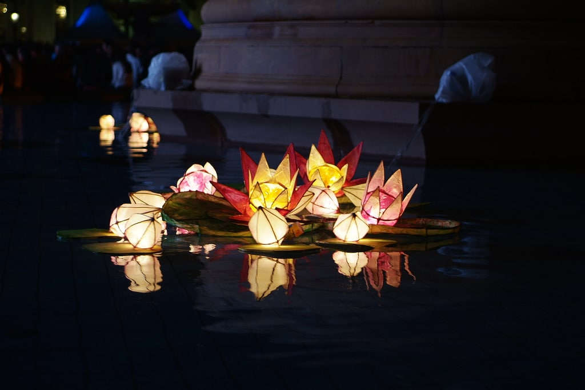

📷: @S Pakhrin
Holi, in March, is another Indian festival that has gained international recognition. Also known as India’s “Festival of Colours”, it symbolises the end of winter, and also the demise of demon Holika. Giant bonfires are lit and rainbow powder explodes into the air. The liveliest celebrations happen in Delhi, with street food and pumping music. The sacred city of Mathura, meanwhile, puts on one of the most traditional Holi festivals.
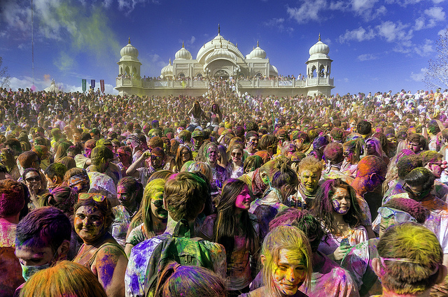

📷:@Steven Gerner
The temple festivals of southern state Kerala are also a cultural highlight. They involve huge psychedelic floats and colourful festivities. Thrissur Pooram in mid-May is the most famous of them all, taking place at Kerala’s Vadakkunnathan Temple.
In September, the Ganesh festival, celebrating Lord Ganesha, the famed and revered deity with an elephant’s head, is a feast for the eyes. Towering statues of the divine being are paraded up and down the country, and gifts and prayers are offered up to the god. Mumbai hosts the most impressive of all the festivals, centring around the Siddhivinayak temple and boasting some 150,000 idols each year.
Indian visa
You’ll need a visa to travel to India. e-Tourist visas, which last up to 60 days and allow double entry into the country, are available to citizens in the UK (and most other European nationals), USA and Australia. You can check the list of eligible countries on India’s e-Tourist visa website.
Your passport must be valid for at least six months from the date of your arrival in India, and it should have blank pages available for use by immigration officers at the border. You should make sure you apply for an e-Tourist visa a minimum of four days in advance of your travel date, but earlier (max 120 days earlier) is recommended.
The visa is non-extendable, and allows entry to 25 designated airports, including Delhi, Goa, Mumbai, Jaipur and more. You can check the full list here.
A tourist visa is sufficient for those planning only to travel around – if you plan to work, you should apply for an e-Business visa instead.
You must apply for and pay for your e-Visa online – the step-by-step process is simple. You’ll need to have your personal and passport details ready to fill in the relevant forms, and upload a recent passport-style photograph (in colour). If the online process is available to you, a handwritten application will no longer be accepted.
The fee will depend on the type of visa you’ve applied for. Note that you’ll need to pay the fee even if you withdraw your application, it is rejected, or you choose not to travel. A basic e-Tourist visa should be $60 (approx. £46), plus a $1-2 processing fee, if organised through the government site – you’ll pay considerably more should you use a third-party site.
Indian transport
Cross-country travel in India is an adventure, however you choose to do it – and the country’s vast size means you’ll spend plenty of time in transit. Here’s some advice for the first-time backpacker:
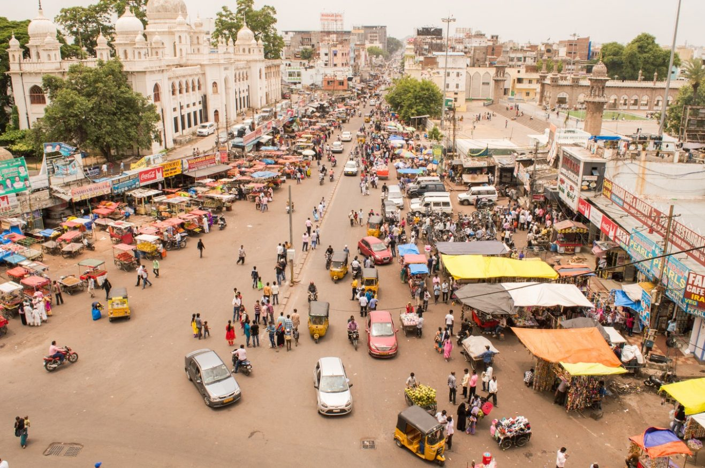

Hyderabad
By train:
Train is one of the most economical and practical ways to get around the country. Save from some of the most remote and mountainous regions, great swathes of the country are covered by the rail network – and it’s a fantastic way to take in some stunning Indian scenery, from tea plantations to forest-covered peaks. The best piece of advice is to be flexible: trains don’t always run to schedule, and if you take this in your stride, you’ll have a much more relaxed trip.
Given India’s sheer scale, journeys are often long – that means long-distance trains (usually called “express” or “mail” trains) are the ones you’ll most likely find yourself on.
Opting for sleeper class is a top way to save some precious sightseeing time in your itinerary. You’ll need to book in advance to secure a bunk since trains across the country can become extremely packed. The overnight carriages are lined with bunks of passable comfort levels and you can pull them down ready for a night’s sleep – remember to bring a blanket and some ear plugs if you can (and look out for chai wallahs making their way around the carriage, selling steaming sweet tea).
An even more budget-friendly (but markedly less comfortable) option is the general, unreserved second class. These are fine for slightly shorter journeys – but the rigid seats (should you manage to find one), crowds and lack of space are not recommended for longer trips. At the other end of the scale, AC class is the top grade, with air conditioning, comfy berths and private compartments.
There are also pricier fast trains available between some destinations – usually zipping between major metropolises. Look out for the Shatabdi Express trains that connect some of India’s biggest cities, from New Delhi to Mumbai – or the Rajdhani Express which joins Delhi up with cities such as Bangalore.
Fees vary between classes, train type and, most importantly the duration of your journey – though they’re always very reasonable. The official Indian Rail website can be a little clunky, so the best way to calculate your fare accurately is by using sites such as ClearTrip – ClearTrip will allow you to plan your journey, check various routes, available classes and fares, and book your trip. You can also book through the sleek Indian Railway Catering and Tourism Corporation website, which is geared up for foreign travellers.
Finally, you make reservations at the train station, but expect lengthy waits.
Unfortunately, the popular IndRail pass, which allowed tourists unlimited travel during a fixed period, was discontinued in late 2017. It’s yet to be seen whether this will be replaced with another option.
By bus:
Generally, train travel is more comfortable and convenient than bus transit – but it’s not always an option, particularly in remote Himalayan areas.
Like trains, there are a range of bus services and classes available. The most basic and affordable of these are the government-run services, but these are often extremely busy, and the buses are usually a little rickety and worn out.
Private services tend to offer a little more comfort, and they generally cover the same number of routes. However, be aware that some private services may not have breakdown cover.
Classes range from “ordinary” to “semi-deluxe”, “deluxe” or “super deluxe”. The gradings are a little woolly and cannot always be relied upon – but “ordinary” options are the cheapest, usually with harder seating and very little room. The higher-band options should boast more comfortable seating and increased space (though this is not guaranteed). Some “super deluxe” services may also have air con.
Bookings will depend on the service you plump for. If you opt for a “deluxe” option, be it a private or government-run service, you should be able to book in advance (either at the bus station or online through websites such as redBus). If you decide to travel on an “ordinary” service, you’ll not be able to book and will need to squeeze on as best you can when the bus arrives.
By car:
Indian roads are notoriously chaotic – expect people and cattle amidst the traffic, and rickshaws weaving between the fast-moving cars. If you’re up in the mountains, the roads’ sheer drops and switchbacks can be even more perilous.
It’s therefore not recommended that foreign travellers drive in India. If you’re desperate for the freedom of the road, and wish to reach the most remote of places, it’s best to hire a driver along with your car (this is very common in India).
Costs will vary depending on the type of car you choose, and the length of your journey – cars can usually be arranged through your accommodation or at the tourist office. Reputable companies include Car Rental Delhi in northern India, and Swagatam Tours which run across the country.
By rickshaw:
An auto-rickshaw or “tuk tuk” is one of the most iconic modes of transport in India. You’ll see them zig-zagging between the traffic, laden with tourists and locals alike. Always agree a price before hopping in, since most drivers don’t use their meter. Usually you shouldn’t expect to pay more than about Rs25 to travel a few kilometres. There’ll usually be an extra charge to transport luggage.
Accommodation in India
India has no shortage of hostels, from inner-city spots with lively hangout areas to peaceful retreats away from the hustle and bustle. We’ve picked our favourite options in India’s backpacker hotspots:
The best hostels in Delhi:
For solo travellers: The Madpacker’s Hostel is an all-round winner with a snug common room and pretty rooftop garden perfect for getting to know other travellers. They also organise foodie and sightseeing tours, and they can hook you up with motorcycle rentals and more.
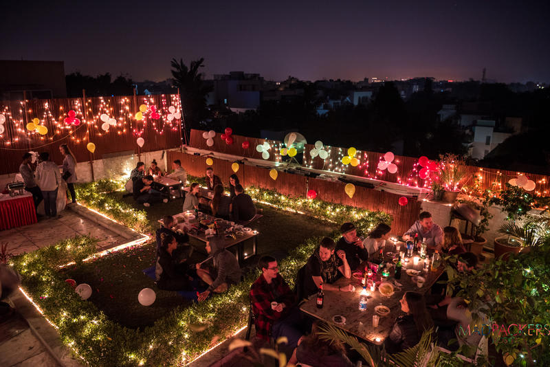

Madpackers Hostel Rooftop
For socialising: An After Story has ample space for making new friends, from a café and gaming areas, to a sprawling terrace and shared lounge. Dorms range from basic to superior and there are private rooms if you’d prefer some quiet time after hanging with your new-found friends.
For relaxation: Roots Hostel is the one for a truly serene getaway. Located in the south of the city, away from its pulsating heart, the hostel has a plunge pool (very welcome in Delhi’s sticky heat) and tranquil gardens. A rooftop area grants sweeping views around the city’s sought-after Sainik Farms area
For privacy: Letsbunk Poshtel has stylish, Scandi-chic private rooms with en suite bathrooms, ideal for couples. It feels almost like a boutique hotel, though there’s a buzzing lobby area and comfortable dorm rooms if you’re craving the hostel vibe.
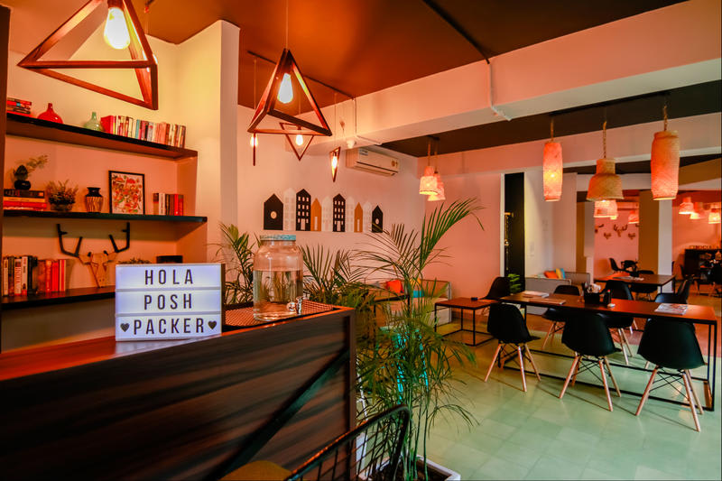

Letsbunk Poshtel
The best hostels in Mumbai:
For solo travellers: A bright, friendly spot, The Social Space boasts colourful communal areas with plenty of books and board games, plus mixed and single-sex dorms fitting up to 12 people. Staff brimming with local knowledge are also on hand.
For socialising: If it’s a community feel you’re after, then look no further than Horn OK please Hostel. Buzzing kitchen and living areas offer travellers plenty of places to mingle, while hostel staff are dedicated to showing backpackers the best of Mumbai, from the top night spots to offbeat local favourites. Private and dorm rooms are available.
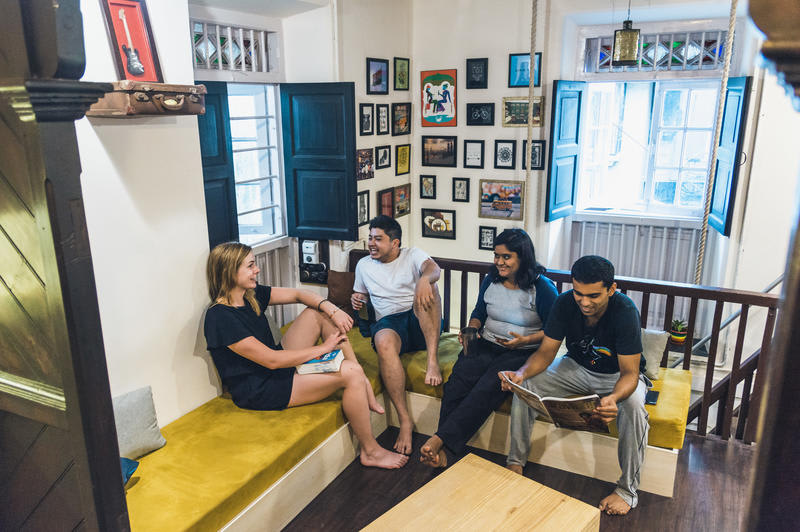

Horn OK Please Hostel
For relaxation: Away from the rumble of central Mumbai, Basti – A Backpacker’s Hostel prides itself on its laid-back vibe. You can get cosy in a bright dorm or private room, themed by various Indian villages, and fill up on a traditional breakfast come morning.
For privacy: Relaxed Hostel Mantra is ideal for couples, and those in need of some quiet time after a busy day’s exploration. The rooftop chill zone is a great space to let any travel stresses seep away, while generous private rooms offer refuge for weary travellers. If you feel like socialising, though, there’s a common room both in and outdoors, and you can bond over the homemade breakfast included in the price of your stay.
The best hostels in Agra, Uttar Pradesh
For socialising: You’ll have no trouble finding new travel buddies at Bedweiser Backpackers Hostel, a cordial venue in Agra’s southeast. The hangout area is trendy, with murals and piles of colourful cushions, while the onsite café is urbane and graffiti washed. A games room and big screen adds to the fun, with private rooms, single-sex and mixed dorms available.
For solo travellers: If you’re a lone backpacker looking for some extra support and comfort, plump for Pyrenees Hostel by Indian Culture. More a homestay than a hostel, the family-owned accommodation is quiet and comfortable with locals on hand to ply you with travel tips. You’ll also be able to gorge on Agran delicacies and the property is located less than half an hour from the Taj Mahal.
For relaxation: Gostops Agra is a seriously stylish spot, with its block-coloured furniture and mural-adorned walls. It’s also an oasis of calm, with a pocket-sized library and relaxing chai sessions. Once you’ve recharged, it’s a 15-minute walk from the Taj Mahal.
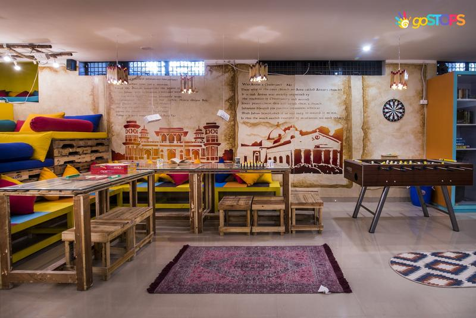

Go Stops Hostel
For privacy: Couples and solitude seekers should check into Moustache Hostel Agra. An elegant “poshtel”, it boasts stained glass, airy rooms and a spacious terrace with views of the Taj Mahal. Superior double rooms are available.
The best hostels in Jaipur, Rajasthan
For solo travellers: Quirky Bunkstop is a dream for solo travellers. Part of a small chain, the Jaipur location is plonked in the centre of the city, and you’ll get free transit from the railway or bus station to the hostel. There’s also not one, but two, game-filled common areas, three terraces and private and dorm rooms, both deluxe and standard.
For socialising: If it’s a party you’re after, Doodle Rack is the place to be. The hostel offers discounts on nearby nightclubs and lays on karaoke nights and other fun events for its guests. There are also BBQ facilities, plus areas to play squash and darts, so you’ll have plenty of ways to break the ice with fellow travellers.
For relaxation: The family-run Vinayak Guesthouse will make you feel right at home in no time at all. In a quiet spot a little way from the bustle of Jaipur’s centre, the charming hostel has a rooftop restaurant doling out Indian delicacies and both shared and private rooms – some of the latter even have balconies.
For privacy: Chic Hoztel Jaipur is a great bet for couples, with superior private rooms, and privacy curtains in the dorms too. Helpful staff and close proximity to public transport links means you can whizz off on day’s adventure with no fuss at all.
The best hostels in Goa
For solo travellers: With a rooftop strung with fairy lights and musical instruments left for travellers in the common room, Gypsys Hotel is a veritable hippie haven. The home-cooked Indian food will feed your soul as well as your belly, and you’ll be a stone’s throw from Anjuna beach, famed for its legendary trance parties.
For socialising: Fun-filled Pappi Chulo has psychedelic walls, its own bar, a garden-cum-nightclub and resident pets. After the party, rest your head in a private room or dorm, papered with movie posters.
For relaxing: The Funky Monkey Hostel has relaxation at its heart. Join a morning yoga session or relax in the leafy garden and think back on the day’s adventures. This one’s also close to Anjuna beach and the town’s seaside flea market.
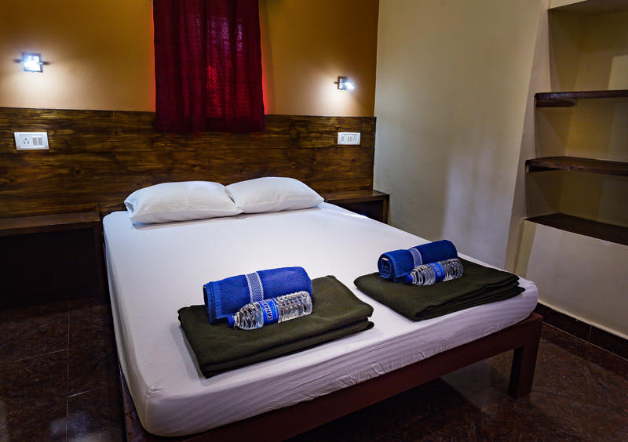

The Funky Monkey Hostel
For privacy: A 19th-century Portuguese villa, this one kicks things up a gear. The Nest by Hostelology is tucked in farmland and forestland, but still almost touching distance from Goa’s backpacker highlights. Sink into bed in a deluxe private room or a comfy dorm and wake to yoga in the morning.
The best hostels in Kochi (Cochin), Kerala
For solo travel and socialising: Sowparnika Hermitage’s bright living area, complete with plush chairs and yoga mats, make this one a winner for the solo traveller. Bond with your peers over a home-cooked breakfast in the morning and ask the friendly family owners for travel tips throughout your stay.
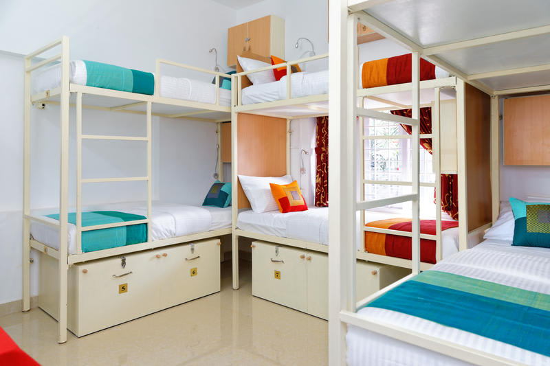

Sowparnika Hermitage Hostel
For relaxation: It doesn’t get much more peaceful than this. From yoga on the rooftop to a free pickup from the bus or train station, the locals who run Tantraa Homestay ensure your trip is stress free. Other highlights include guided tours of the city and seafood dinners if you provide the fresh fish.
For privacy: Sithara Homestay is a peaceful hideaway conveniently close to some of Kochi’s top sights. Couples will appreciate the ample double rooms, and there’s also a family apartment available if you’re travelling with the whole clan.
Travel costs in India
The currency:
India’s currency is the rupee, with Rs100 equal to £1.09 or $1.41. The rupee is a closed currency, meaning you’re not permitted to take more than Rs25,000 (just under £300) out of the country.
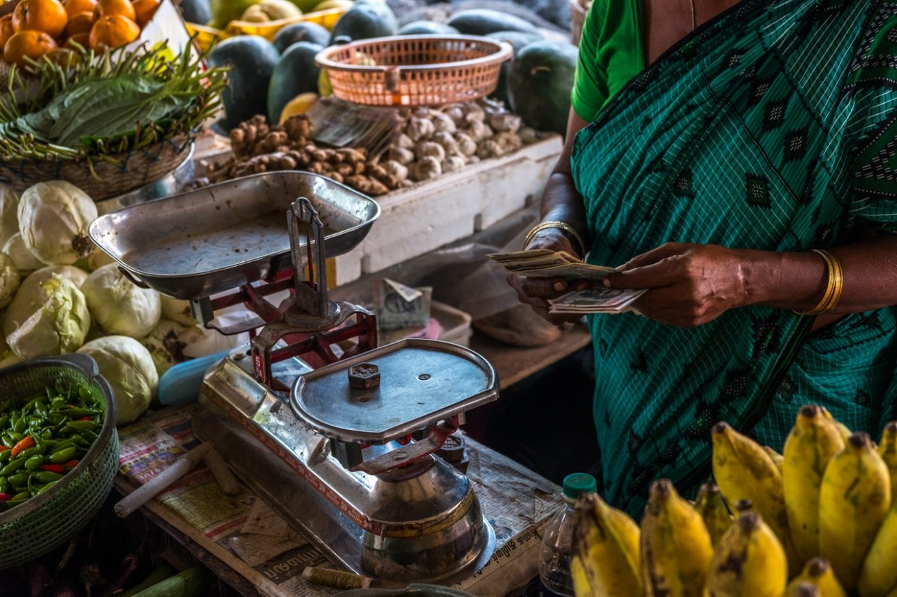

Budgeting:
India is an extremely affordable place to travel, and – depending on your choice of restaurants and accommodation – you can easily get by while spending very little. Remember that touristy spots such as Goa will require more money than more remote or rural parts of the country.
Hostels: A dorm bed in a hostel can be as little as Rs400 (approx £4.30/$5.60) per night– private rooms will of course be more, though you’ll be able to find them for as little as Rs550 (£6/$7.70) per night.
Eating out: The costs of meals depends greatly on your preferences: you could choose to eat a top meal in a Western-style hotel (it will still be less than you’d expect), but you can equally enjoy a delicious traditional feast for a fraction of the price. A thali at a low-key restaurant can be as little as Rs150 (£1.64/$2.10).
Transport: Daily budgeting for transport costs is almost impossible – an eight-hour overnight journey will obviously cost more than a quick jaunt across town in a rickshaw. The route between Delhi and Agra is a good cost marker, since it’s a journey many a backpacker will make: for this four-hour route, you can pay as little as Rs156 (£1.70/$2.19) for a sleeper class or Rs750 (£8.20/$10.50) for AC class.
Alcohol/nightlife: You should expect to pay around Rs100 (£1.09/$1.40) for a pint of beer. Nightclubs and bars aren’t a formative part of India’s culture, and many are aimed at foreign travellers or wealthier Indians – this means that, though still easier on the pocket than a night out in the west, drinking is not one of India’s most budget-friendly activities.
Groceries: You’ll be able to shop for groceries for very cheap prices in India. Two pints of milk costs an average of Rs50 (£0.55/$0.70), while a loaf of bread will come in at around Rs30 (£0.33/$0.46).
Toiletries: Toiletries are also fairly affordable. A regular bottle of shampoo will be around Rs200 (£2.15/$2.80), while a tube of toothpaste should be less than Rs100 (£1.09/$1.40).
Activities: If you do everything else on the cheap, sightseeing will likely take the greatest chunk out of your daily budget, since many of India’s historic sites will charge a higher entrance fee to foreign tourists. Tourists must pay Rs1,000 (£10.90/$14) for the Taj Mahal, while you’ll pay Rs550 (£6.00/$770) to visit Agra Fort.
Top budgeting tips:
- Go where the locals go: As a general rule, hotels and restaurants aimed at foreign travellers will be pricier. You’ll save pennies (and have a tastier meal) if you skip them altogether.
- Opt for sleeper class: It’s cheaper than AC class, and you’ll save precious time in your itinerary.
- Agree travel fees up front: If you’re travelling in a taxi or autorickshaw, agree the fee with the driver upfront or ensure the metre is running. This stops you from paying over the odds and avoids an awkward exchange at the end of your journey.
Places to visit in India
Itineraries:
It’s little exaggeration to say that the travel possibilities in India are endless. Whether you want to drink in ancient ruins, sail chocolately waters, spot tigers in the wild or bask on the beach, you can do it in this diverse South Asian country.
Depending on the length of your trip, and your personal travel preferences, choose from the below itineraries which hit some of India’s highlights.
2 week itinerary in India
2 week itinerary in India – steps |
Places to visit in India |
Things to see in India |
|---|---|---|
| Days 1-3 | Delhi | the Old City, Chandni Chowk, the Red Fort, Jama Masjid |
| Days 4-5 | Agra | the Taj Mahal, Agra Fort, Agra’s bazaars |
| Day 7 | Fatehpur Sikri | the Royal Palace |
| Days 8-10 | Jaipur | City Palace and Hawa Mahal |
| Days 11-12 | Jodhpur | Mehrangarh Fort, Sardar Market |
| Days 13-14 | Udaipur | the City Palace |
Days 1–3
The glittering Golden Triangle is the mainstay of many an Indian itinerary. This well-trodden loop takes in buzzing capital Delhi, the monument-rich city of Agra and Jaipur – the capital of Rajasthan, including the “Pink City”.
Fly into Delhi and revel in the culture shock triggered by its pulsating streets. Spend time in the labyrinthine bazaars and alleys of Old Delhi, making time especially for Chandni Chowk: a throbbing commercial vein in the heart of the Old City, its market stalls brim with spices, saris and souvenirs.
The Red Fort is the city’s most recognisable landmark, an impressive Mughal residence, built of sandstone and dating back to 1638. Striking Jama Masjid, one of the most impressive mosques in India, is also not to be missed. The skyscrapers of New Delhi sit in glorious contrast with the older neighbourhoods.
Days 4–5
After you’ve spent two to three days in Delhi, strike south for Agra, home of the Taj Mahal, an icon that needs little introduction. Head to the Taj in early morning to share this revered sight with as few people as possible.

Taj Mahal 📷: @Julian Yu
Agra Fort should not be overlooked, either. Glowing red, this UNESCO World Heritage site is only a 25-minute walk from the Taj Mahal, once also a seat of the Mughal empire. Beyond the big sights, getting lost in Agra’s tangle of bazaars (such as popular Sadar Bazaar) is the best way to get a feel for the city.
Day 7
After another two days or so, make the short journey southwest to Fatehpur Sikri, an ancient city cast in sandstone that warrants a full day’s exploration. Its highlight is the imposing Royal Palace.
Days 8–10
Next, head further west to the city of Jaipur, an architecture-lover’s dream. The heart of Jaipur is the “Pink City”: tucked within its formidable salmon-washed walls is the beautiful City Palace and Hawa Mahal, the “Palace of the Winds” and the most recognisable image of the city. Once you’ve soaked in the sights, head in search of street food such as golgappa (a kind of fried bread with steaming fillings) being doled out from carts.
Next, some 8km from the city, lies hilltop Amer Fort, which offers not only another dose of history, but also incredible panoramas across this portion of Rajasthan.
Days 11–12
Given you’ve spent an ample 10 days discovering the Golden Triangle, you should have around four days to finish up your two-week Indian adventure. Make an overnight journey by train to the colourful city of Jodhpur – nestled in the Thar Desert, the city is known for its blue-hued buildings and the looming Mehrangarh Fort, which watches over Jodhpur from a massive rocky scarp.
Make sure you also absorb the sights and smells of Sardar Market, perhaps purchasing a handmade gift from one of the city’s makers.
Days 13–14
A final overnight rail journey will take you to Udaipur, one of India’s most idyllic cities. Lining Lake Pichola, Udaipur is a cluster of intricate palaces, the verdant Aravalli Hills rising behind it.
Make time for a boat ride around the lake: a knowledgeable guide will offer informative snippets about the sights reflected in the waters, such as the lakeside City Palace, also worth a visit.
One month itinerary in India
Days 1–12
Follow the two-week-long itinerary above, which follows the Golden Triangle and drinks in some of Rajasthan’s top sights, until you reach Jaipur. With two more weeks to play with you can venture beyond India’s most revered historical sights, and revel in its natural wonders too.
So, from Jaipur, instead of slicing through to the city of Udaipur, make for the Ranthambore National Park.
Days 13–14
Sprawling Ranthambore National Park is one of India’s most popular, home to tigers, leopards, hyenas and more. The best way to reach it is by travelling to Sawai Madhopur Railway Station from Jaipur – from here you can hop into a taxi or onto a bus.
Safari trips run morning and evening, and you can book a seat in a jeep or larger canter online. You could spend a single day at the park, though may travellers prefer to overnight here for the best chance of spotting some wildlife.
There are plenty of lodgings lining the road up to the park and some within the park proper – but accommodation in these parts tends to be pricier than average.
Days 15–16
Once you’ve spent ample time spotting tigers, you can travel in sleeper class from Sawai Madhopur to Udaipur and take in the royal palaces and rippleless waters.
Day 17
Break up the long journey from Udaipur down to Mumbai with a stop in the often-overlooked city of Ahmedabad in the state of Gujarat. Here you’ll find some of India’s most delicious street food, especially clustered around Khas Bazaar.
Days 18–20
Next, Mumbai should be calling, and an eight-hour train journey from Ahmedabad will land you in this most intoxicating of cities. The metropolis bursts with activity, from vendors hawking their wares to rickshaws whizzing through the traffic.
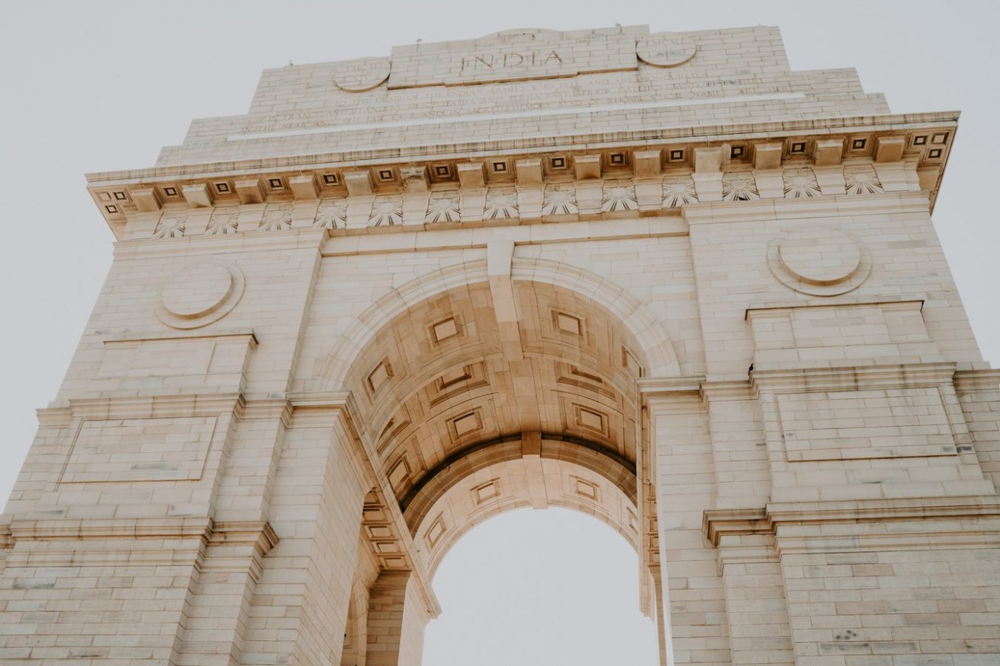

The Gateway of India 📷: @Annie Spratt
The Gateway of India, a mighty waterside arch drawing many a traveller and budding photographer, is the city’s most iconic landmark. Admire it before making a beeline for Kala Ghoda, Mumbai’s creative district, with murals, hip art spaces and oodles of cafés.
Take a day trip out to Elephanta Island (you can get a boat from Mumbai’s harbour) to see the impressive cave-hewn temple with its huge sculpture of deity Shiva.
Days 21–24
From Mumbai, make your way to the backpacker heartland of Goa – trains come into the main stations of Thivim and Margoa. Despite its relatively small size, Goa is a diverse state, so it still warrants three or four days of your itinerary.
The beaches are the principal draw of this coastal region, and the busy seaside town of Baga is one of the most popular spots. Bask on sandy Baga Beach, take part in water sports such as jet skiing, and make the most of the throbbing nightlife.
Just south of Baga Beach, Calangute is equally busy and resort heavy. If you’re craving something a little quieter, make for Kakolem Beach, which is gloriously secluded.
Southeast of these strands is Old Goa (or Velha Goa), dripping with colonial-era architecture, such as intricate St Catherine’s Cathedral.
Two-hours’ drive southeast, the Dudhsagar Waterfalls should also be on your radar. The thundering cascades reach 600 feet and can be reached by a short, forested hike.
Days 25–26
Next make for Hampi in the state of Karnataka (there are easy train routes to nearby Kariganuru). Often skipped over by visitors eager to reach India’s southern states, Hampi is a picturesque city of crumbling sacred sites with a peaceful riverside location.
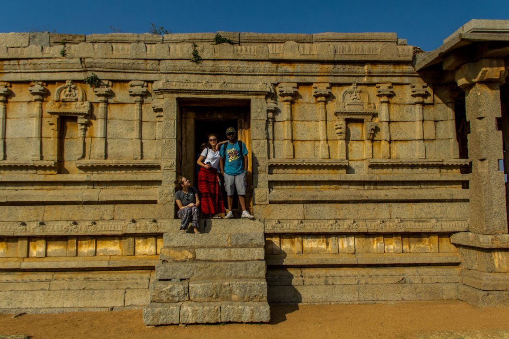

Hampi
Towering Virupaksha Temple, still working, looks over the city, while Hampi Bazaar is one of the best places to get a feel for the modern city.
Days 27–30
Finish your travels in the state of Kerala, often nicknamed “God’s Own Country”.
Begin in Kochi (or Cochin), a laid-back port city in the centre of the state. Fort Kochi, a pretty area filled with Portuguese-style buildings and fronted with traditional fishing nets, is the neighbourhood most popular with foreign travellers. The enclave of Ernakulam is one of the best places to find a traditional bite.
The most quintessential way to explore this lush state in southern India is by boating around the backwaters. You can set off from Alleppey, a waterside city situated between Kochi and Kollam from which it’s easy to hire a houseboat or kettuvallam. Sailing through Kerala’s watery alleyways, for a day or even longer, is one of the most serene experiences you’ll have on your travels.
2 month itinerary in India
Days 1–20:
Follow the one-month itinerary (above), taking in the Golden Triangle and Ranthambore National Park, plus the Gujratan city of Ahmedabad and Mumbai.
Day 21:
Make the journey from Mumbai to the jaw-dropping Ajanta and Ellora caves. The two sets of caves are fairly remote and difficult to reach, but they’re well worth the effort. You can make the 6–7-hour journey from Mumbai to Aurangabad by train, then catch a car or a bus to the caves from here.
They’re carved with delicate patterns, with cavernous chambers, ornate columns and impressive sculptures of deities and elephants. The Kailash temple (in Ellora’s cave 16) is the most elaborate and famous part of the structures.
Day 22:
You’ll be best placed to continue your route south by returning to Mumbai and branching out from here.
Days 23–27
Head down to Goa where you can feast on seafood, party on Baga Beach, admire Old Goa’s architecture and hike to Dudhsagar Waterfalls.
Also make time for Panjim, Goa’s capital, which will be a welcome break from this state’s busy beachside resorts. Fontainhas, the gorgeous Latin Quarter, is particularly worth a wander.
Days 26–30
From Goa, make your way down to lush Kerala where you can sail the backwaters and explore the waterside city of Kochi.
Day 31–32
Next, head out to the Keralan town of Munnar, one of India’s top tea-growing regions. There are trails you can follow taking in sweeping views of the verdant tea plantations, plus an interesting little museum all about tea in the town. You can also take tours of Kolukkumalai, the highest-elevation tea plantation on the planet, soaring to 7,000 feet.
Day 33–34
After days of adventuring, set your sights southwest to chilled-out Varkala. The idyllic beaches are the highlight: the waters of Papanasam Beach are considered sacred and holy rituals are performed here.

Kerala
Day 35–36
Journey by train further south still to Thiruvananthapuram, Kerala’s cool capital. This city is often missed off tourist itineraries, but its art galleries and historic palaces warrant a day or two of exploration.
The Sri Chitra Art Gallery chronicles Indian art and also showcases work from China, Japan and beyond. There are also plenty of places to dig into traditional Keralan delicacies from dosa to idli.
Days 37–39
Set aside at least two days to soak in the sights of Madurai in Tamil Nadu. The city rumbles with activity, from bazaars to street cafés, and the gargantuan, sculpture-adorned Meenakshi Temple dominates the city.
Days 40–41
Then travel north to Pondicherry, a former French colonial town. Discover the region’s heritage in the French Quarter, with its elegant architecture and French cuisine, then pay a visit to rugged Promenade Beach.
Days 42–43
Next stop is Chennai, Tamil Nadu’s rumbling capital. Fort St George, the first ever British outpost in the country, is the city’s biggest landmark. Be sure to carve out some time in the hip neighbourhood of Nungambakkam, with its cool cafés and quirky shops.
Days 44–47
Break up the long train journey to Kolkata with stops in the cities of Tirupati and Visakhapatnam. The former is known for glittering Sri Venkateswara Temple, while the latter has some lovely, unspoilt beaches.
Days 48–49
Another expedition north and you’ll be in Kolkata (formerly Calcutta), a onetime colonial capital and the current capital of West Bengal. Today it boasts a thriving creative scene with myriad art galleries, avant-garde theatres and hipster cafés.
A British influence is still evident in much of the city’s architecture (think the graceful façade of St Paul’s Cathedral) and the sprawling India Museum with its Mughal paintings and historical displays is also worth a peek.
Days 50–51
From Kolkata, take a quick detour south to experience the Sundarbans: a vast area of mangrove forest and UNESCO site that encompasses a tiger reserve. You’ll need to catch a train from Kolkata to Canning, before hopping on a bus to Namkhana, before finally using a motorboat service to reach the national park – it’s a long journey, but it’s worth it.
Days 52–53
Make your way back to Kolkata, before setting your sights on Darjeeling: one of India’s foremost tea regions. Admire the terraced tea plantations, gaze up at mighty mountain Kachenjunga, watch the sunset from popular viewpoint Tiger Hill, and don’t miss a ride on the famed “Toy Train” railway.
Days 54–60
From Kolkata, proceed further north still to reach Rishikesh. It’s a long overland journey (flying is recommended, though it is doable by train) – but you can relax once you’re in the spiritual city of Rishikesh. (Follow the “zenning out” itinerary below to end your trip on a restful note).
Themed itineraries
- 1 week itinerary in India for zenning out
- 1 week itinerary in India for getting off the beaten track
- 10 day itinerary in India for all-out adventure
Whether you want to relax and rejuvenate, or push your limits, these shorter, focused itineraries will help you make the most of your trip. Build them into a larger itinerary or follow them as they are.
For zenning out
Days 1– 4
For a truly relaxing escape, you should head north to the state of Uttarakhand. The city of Rishikesh is famed the world over for its ashrams, ancient shrines and yoga retreats: the Beatles even visited Rishikesh in their heydey, in search of a spiritual haven, and to meet the Maharishi Mahesh Yogi.
You can reach the city by flying into Delhi and taking a bus from here. The Sivananda Ashram and Parmarth Niketan are two of the most revered spots here. Give yourself ample time to feel the benefits of this rejuvenative place.
Day 5
Spend a day at the sacred city of Haridwar, also in Uttarakhand, around an hour from Rishikesh. Haridwar, a Hindu pilgrimage site, is one of India’s holiest cities. It’s home to Har Ki Pauri, a hallowed ghat leading into the River Ganges – its name translates as “Footstep of God”.
Days 6–7
Even further north than Rishikesh is Gangotri, a Himalayan town nestled amid snow-capped peaks also dotted with ashrams and retreats. It’s dominated by white-washed, gilded Gangotri temple – a must-visit during your trip.
For getting off the beaten track
Days 1–2:
Gujarat is one of India’s most underrated and least-visited states. Begin in the state’s biggest city, Ahmedabad. The city is notoriously busy and traffic-choked, but embrace it and you’ll be rewarded: it brims with beautiful sacred buildings, from ornate mosques to striking Hindu temples.
Days 3–4:
From here, strike as far west as you can go to reach Dwarka, also in Gujarat state. It’s a beautiful, coastal region worlds away from the busy beaches of well-touristed Goa further south.
The ancient city itself is home to the eye-catching Dwarkadhish Temple and Dwarka Beach – the lighthouse offers sweeping views of the surrounds.
Days 5–6:
Next make the long pilgrimage (you’ll need to change trains several times) to equally overlooked Orchha, in the neighbouring state of Madhya Pradesh.
Fittingly, the name of this medieval town translates to “hidden”, and it moves at a blissfully slow pace. Make the most of the quiet palaces and temples, with decadent Jahangir Mahal the grandest of them all.
Day 7
Strike further east still to reach the spiritual city of Varanasi. While most will have heard of this spellbinding place, still too many leave it off their itineraries in favour of the thrumming cities further north and Goa to the west.
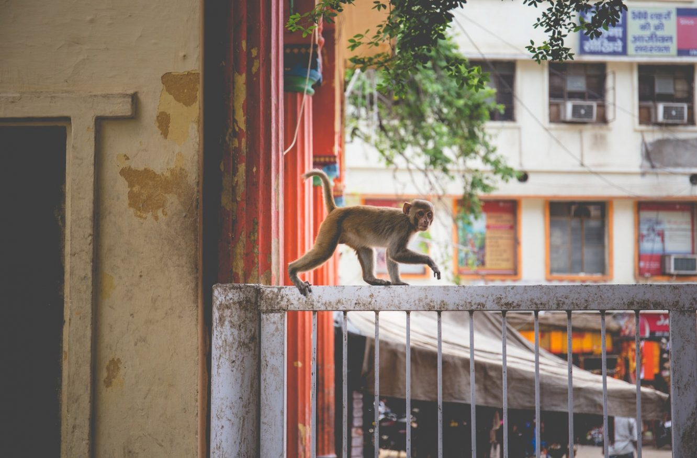

Varanasi
It occupies a glorious spot on the River Ganges and is one of the oldest living cities on Earth. It remains a place of pilgrimage for Hindus, particularly known for its sacred ghats. Manikarnika Ghat is the holiest of them all, and one of the places Hindus practice funeral rites. (Remember to be respectful and refrain from taking pictures.)
For all-out adventure
Day 1:
The northern reaches of India are great for adventure too. Make for Leh, in Ladakh: an enchanting Himalayan city some 3,500m above sea level, it makes a perfect base for trekking in the mountains. In the city itself, hilltop Leh Palace is a good place to start your explorations, and a great place to drink in panoramas of the Ladakh mountain range.
Days 2–10:
The Markha Valley trek, leaving from Spitock near Leh, is one of the most popular treks in this region. Usually taking around 8 days to complete, the renowned route weaves through its namesake, taking in lofty mountain passes and beating its way across stark valley floors. You’ll need a good level of fitness and some hardy cold-weather clothes.
Note: regardless of your fitness level, the dizzying heights can cause altitude sickness. If this happens, rest as much as possible, drink plenty of water and cut your journey short if necessary.
Top backpacking tours in India
If you’re keen to travel in a group, there are plenty of operators that run tours across the country. Here are a handful of our favourites.
- Kerala Connections: This British-based tour company specialises in tailor-made itineraries and, despite its name, offers expeditions up and down the country from Tamil Nadu to the Golden Triangle.
- Steppes Travel: Renowned for its adventurous journeys, Steppes offers both small expert-led tours and larger group expeditions. Options include snow-leopard trekking in Ladakh and a tiger safari taking in Central India.
- Intrepid Travel: Another prestigious operator, Intrepid allows travellers to experience the true essence of India, from the forts and palaces of Rajasthan to a Golden Triangle tour that extends out to Varanasi.
- Village Ways: Village Ways’ Responsible Travel-approved tours offer visits to rural Indian villages. They allow travellers to get to know locals and experience traditional ways of life sustainably. Tours occur up and down the country, from the Himalayas to Karnataka.
- Exodus: “It’s all about adventure” is Exodus’s mantra, and their adrenaline-packed Indian tours ring true to this ethos. Choose between a trekking expedition in the Himalayas, a cycling tour of Rajasthan and much more.
Top 5 things not to miss:
Wherever your travels take you, there a few spots you simply can’t leave off the bucket list. These are the best places to visit in India:
For beaches: Baga, Goa – This coastal town is famed for its sandy strands, beach parties and colonial architecture.
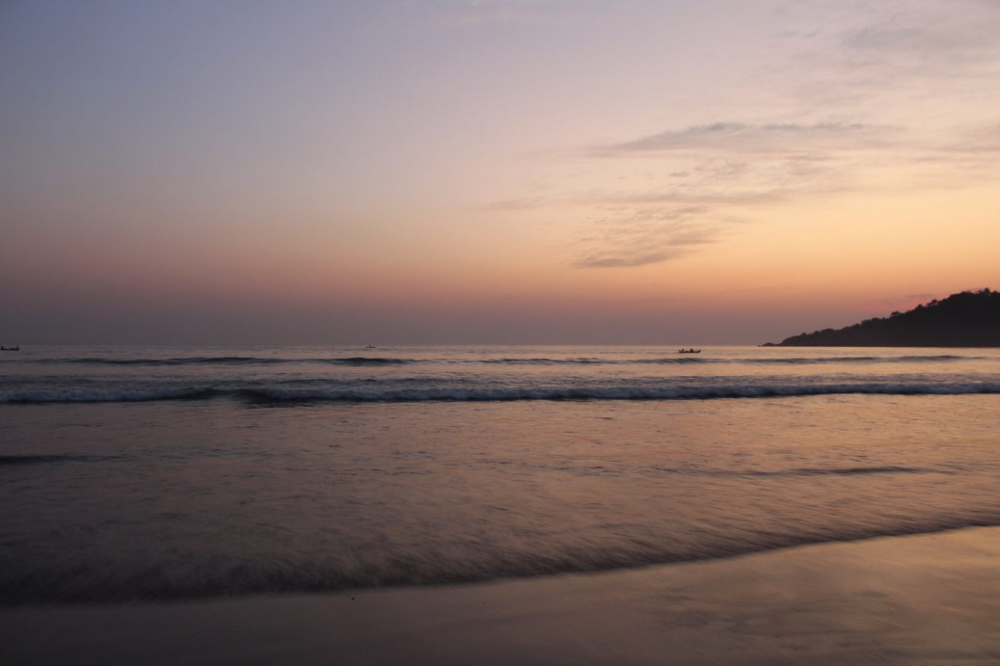

Goa
For historical sights: Agra – Agra is home to the Agra Fort and of course, the Taj Mahal, which really is as beautiful as everyone says.
For peace and adventure in equal measure: Leh, Ladakh – This Himalayan town is filled with Buddhist landmarks and makes the perfect base for mounting trekking.
For wildlife: Bandhavgarh National Park – A sprawling preserve, Bandhavgarh National Park is home to Bengal tigers, leopards, hyena and an abundance of birdlife.
For travel at a slower pace: Kerala’s backwaters – Rent a houseboat and take to the state’s serene palm-lined waters.
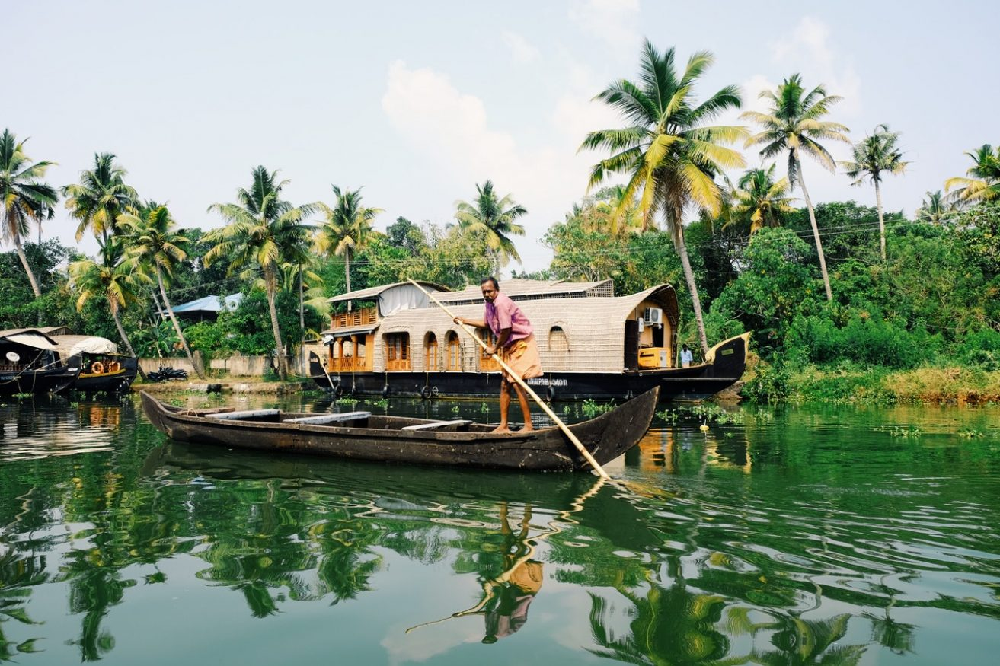

Kerala backwaters
Wildlife in India
From big cats to abundant birdlife, India is an animal-lover’s dream. As with any nature or animal sightseeing trip, it’s important to leave no trace and not to disturb the wildlife’s natural environment. These are the top species to be on the lookout for:
Bengal tiger:
Most legendary of all India’s wildlife is the Bengal tiger. A glimpse of this elusive big cat is high on the wish list of many a backpacker. Bandhavgarh National Park in Madhya Pradesh is one of the top places to see a tiger, with more than 50 of them calling the site home.
If you can handle the heat, the months of April and May are the best times for a sighting. Ranthambore National Park is another top place to catch these entrancing animals.
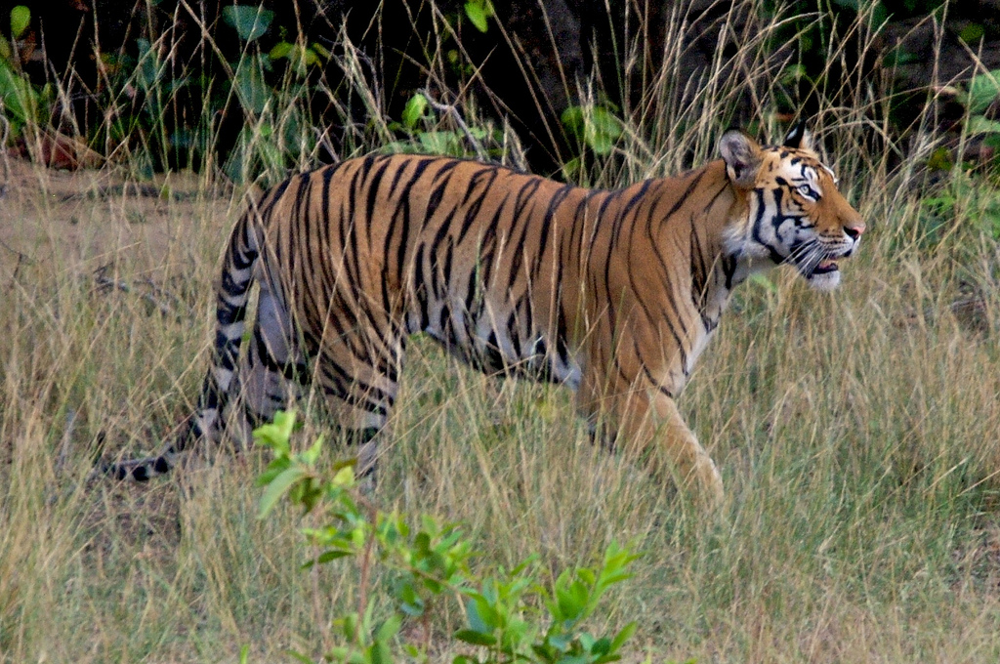

Ranthambore National Park
Asiatic lion:
The little-touristed state of Gujurat is now the only place you can spot the Asiatic lion, once prolific in Asia. You’ll find the last of these majestic animals in the Gir Forest National Park, on the site of a former royal hunting ground.
You can book onto a jeep safari tour, and you’ll have the best chance of getting a peek at a lion between December and April.
Indian elephant:
The Indian elephant is a mesmerising animal. The best place to see one is at a reputable sanctuary – make sure you do your research before you go. Please avoid all elephant rides as these cause harm and distress to the animals. Look out for ethical elephant tourism experiences such as visiting a rescue sanctuary.
The Elephant Conservation and Care Center in Mathura nurses rescued elephants back to health – you can book a two-hour slot to spend time with these gentle giants.
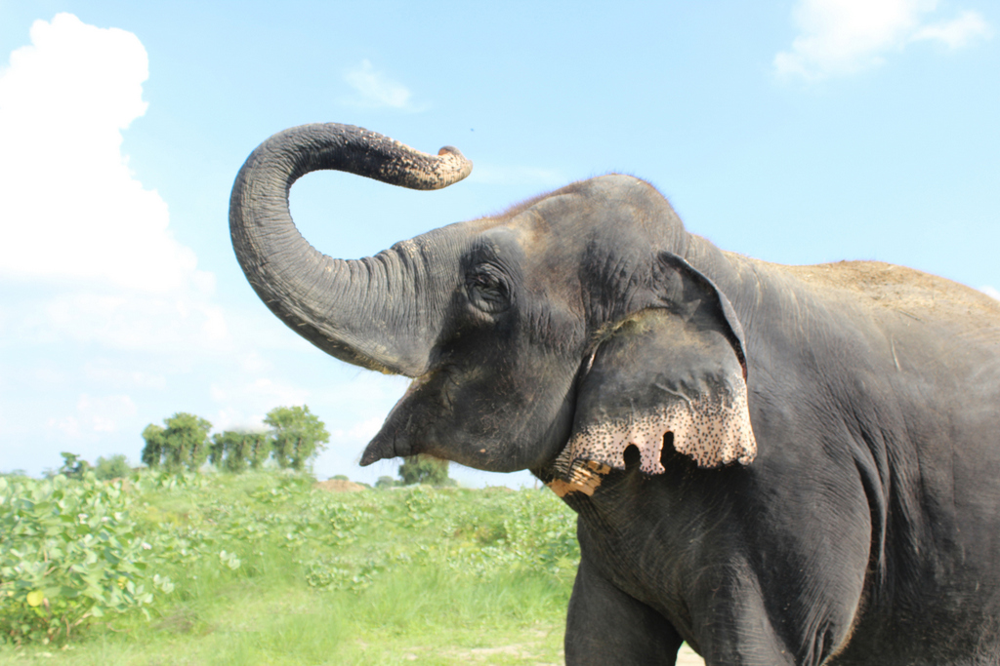

Snow leopard:
Perhaps the most elusive of all, the snow leopard lives in India’s mountainous northern regions. The stark Hemis National Park, reached from Leh, is famed for being a home to these enigmatic creatures. Since these big cats are difficult to track, your best bet is to book onto a tour with an expert guide.
The One-horned Rhinoceros (or Indian Rhino)
This is the world’s largest rhino. The species was once at the point of extinction with a mere 200 animals remaining, but careful conservation meant the one-horned rhino was brought back from the brink. Some 70 percent of the species’ population lives in Kaziranga National Park in Assam, with jeep safaris offered to travellers.
Top things to remember:
- Time your travel: There will be a certain window when you’re more likely to see any given animal species. If you consider wildlife spotting the most important part of your itinerary, make sure your timings are right. National park websites will usually offer details.
- See animals in their natural environment: Avoid sites where animals are kept in small cages or pens, chained up or forced to perform tricks or other tasks. You’ll have the most rewarding experience if you see an animal in its natural environment, so reserve your wildlife spotting for national parks and reputable sanctuaries.
- Manage your expectations: While on safari, you could drive around for hours without spotting a big cat – but peering into the grassland hoping for a sign of movement is all part of the fun. Have patience, enjoy the ride and know that it will be worth it in the end.
Indian Food
From bubbling curries to filled dosas, a trip through India is a taste odyssey.
Traditional cuisine contrasts from north to south: northern India specialises in meaty curries richly spiced with hearty accompaniments, while southern Indian food is usually vegetarian with plenty of rice and lifting flavours such as coconut. Much food in West India is rich in vegetables too – though you’ll come across some quality seafood in Goa.
To get your mouth watering, we’ve picked some delicacies not to miss – and some top spots to try them.
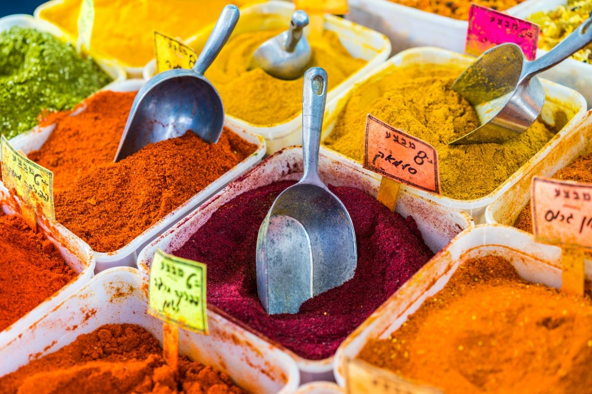

Thali: Thalis, a selection of little dishes served on a steel tray, are served up and down the country. You’ll be presented with a variety of curries, such as kootu, with softened veggies and lentils in the south, or fish stews in Goa. These will be accompanied by sweet chutneys, rice and usually bread or dosa, a kind of Indian pancake.
Where to try it: You can find thalis in most states in India. Dal Roti is a laid-back, no fuss restaurant in Kochi, Kerala, which serves (surprisingly, for Kerala) warming North-Indian-style thalis.
Panupuri: Panipuri are little puffs of fried bread bursting with inviting fillings such as spicy potatoes or other savoury delights
Where to try it: Street-side stalls and bazaars – such as Crawford Market in southern Mumbai – are the best places to find these fried treats.
Masala dosa: If you only try one dish while travelling in Southern India, make it a moreish masala dosa. The dosa is a delicious savoury pancake, and it’s stuffed with a wholesome spicy potato mix.
Idlis, a kind of steamed rice ball, also often accompany south Indian curries – though these are often met with mixed reviews by foreign travellers…
Where to try it: Popular Sri Sabareesh in the southern city of Madurai serves up south Indian vegetarian delicacies including dosa and idli for easy-on-the-pocket prices.
Kulfi: You can’t leave the country without trying kulfi, a type of Indian ice-cream, often flavoured with almond, pistachio or mango and a kick of cardamom.
Where to try it: Giani’s, a little ice-cream-shop chain in Delhi, is a popular spot to pick up this tempting desert.
Goan vindaloo: World’s away from any vindaloo you’ll have tasted on home soil, a Goan vindaloo is a kicking curry packed with chillies, traditionally served with pork but also now cooked up using Goa’s bounty of seafood. This most popular of Indian dishes originated in this state.
Where to try it: Viva Panjim is an unassuming restaurant in Panaji, Goa’s capital, serving vindaloo, plus other specialties such as sanna, Goa’s answer to idli.
Chai: You’ll probably end up sipping a steaming cup of this sweet yet spicy tea daily on your travels. Look out for chai wallahs on streets, on trains, in bazaars and more.
Where to try it: Pretty much everywhere…
Top tips for eating in India:
Getting an upset stomach on your travels is a backpacker’s worst fear – but, honestly, foreign travellers more often get sick by drinking unsafe water than by sampling India’s delicious delicacies. Follow our tips below and you should steer clear of the ever-feared “Delhi Belly”, while filling up on some of India’s most delectable dishes:
- Ask the staff at your accommodation: The people who run your hostel will have great local knowledge, including where to taste authentic delicacies at standout eateries. Pick their brains and follow their recommendations and you’ll begin to successfully navigate India’s glorious food scene.
- Drink up with caution: Drinking tap water as it comes, even from the cleanest of restaurants, can leave foreign travellers with a delicate stomach. Invest in some water purification tablets which you can pop into your drink, leaving it safe to consume. Alternatively, you could buy tightly sealed bottled water on your travels – though this option is the less environmentally friendly of the two.
- Keep your eyes peeled: If you’re choosing a restaurant or street-food stall alone, take a close look and use your common sense before ordering anything. If dirty utensils are being used, if the meat looks pinker than it should, or if there are any other warning signs, move on. Also, wash your own hands regularly and carry some hand sanitiser on your travels.
Indian culture and customs
Customs
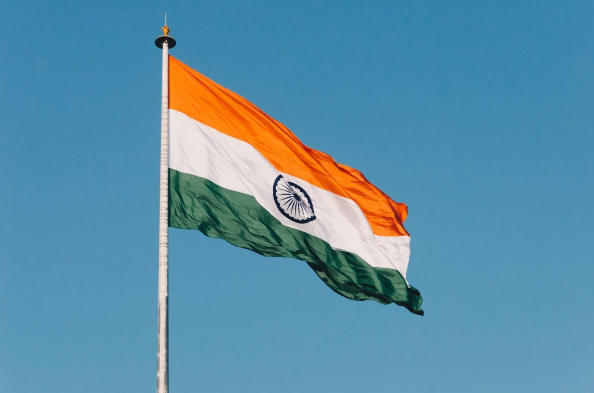

As with anywhere you travel, India has its own unique set of customs, and fully embracing them will both enrich your trip and help it run smooth. Here are a few things to remember:
- Dress appropriately: Both sexes are expected to dress conservatively in India. For women, this means covering your shoulders and legs, wearing long floaty skirts, wide-legged trousers and short or long-sleeved t-shirts. Many female travellers carry a scarf with them: they can then pin it around their neck, allowing it to shroud their shoulders, while keeping them cool. Men should also refrain from wearing shorts where possible.
You’ll notice most local women wearing either a shalwar kameez, a long tunic-like dress, lehenga choli, a kind of skirt and blouse combo, or most famously, a sari – a kind of wrap-around dress usually in eye-popping colours with beautiful, intricate patterns.
- Eat with your right hand: Indians rarely use cutlery, and eating the traditional way is a fun custom to get used to. However, picking up food with your left hand is a major faux pas. This is because, in Indian custom, the left hand is reserved for activities in the toilet! This rule extends to shaking hands or passing objects too.
- Beware of your feet: It’s customary to remove your shoes when entering someone’s home, and even when entering some smaller shops (take note of whether there are shoes lined up at the entryway). It’s also considered rude to point the soles of your feet at someone, so be aware of how you’re sat.
- Be respectful of religion: India is a place of deep-rooted religion (predominantly Hinduism and Islam) and it’s imperative that foreign travellers are respectful of the customs that go along with this. In fact, taking the time to learn of these traditions, from prayer to ceremonies, can be one of the most rewarding aspects of your trip. Not all temples or mosques will allow tourists entry. Those that do will expect especially conservative dress, and you should remove your shoes before entering either. Heed the rules – you may not be allowed in certain prayer areas, for example – and, in Hindu temples in particular, refrain from taking photos.
- Avoid public displays of affection: Embracing and kissing outside the privacy of home is frowned upon on India.
- Get to know people: Indians are notoriously warm, friendly and polite – and meeting the charming local people will inevitably become a highlight of your trip. Most Indians are also curious and will likely ask you questions about your life and your travels. Embrace their inquisitiveness and use it as a chance to ask your own (respectful) questions and stock up on recommendations for your next destination.
Culture:
Religion: Religion shapes Indian culture above all else, with the largest majority of people following the Hindu religion. Foreign travellers will see much evidence of this. Colourful festivals, such as the earlier mentioned Holi and Diwali, are part of Hindu tradition – sculptures of deities such as Vishnu or Shiva, as well as ornate Hindu temples and pilgrimage sites, are also ubiquitous across the country.
Muslims make up the second-largest religious sect, and breathtaking mosques and other Islamic buildings are another of India’s architectural highlights.
Music: Music is an essential stitch in India’s cultural fabric, played at festivals, religious ceremonies, weddings and more.
Classical Hindustani music, popular in northern India, is the genre most often recognised by foreign travellers. It’s hinged on melodic musical scales called ragas and dominated by the twang of the sitar, an Indian stringed instrument. The National Centre for Performing Arts in Mumbai is one of the best places to enjoy this form of music, as well as other genres of Indian and international music.
Filmi is another of India’s most popular musical genres – it consists of songs taken from Bollywood films. They’re often upbeat, fast-paced numbers that have complicated dance routines to match. Some of these, such as Awaara Hoon, soon became international hits, and you’ll hear them played on local radio stations or hummed by strangers in the street.
Film: Bollywood is famed the world over for its colourful costumes, catchy soundtracks and elaborate dance routines. Especially if you’re in the city of Mumbai, make time to catch a Hindi movie at the cinema. Regal Cinema in Mumbai will often show movies with English subtitles.
Language: The people of India speak many different languages, and if you’re travelling any great length you’ll likely experience several different tongues as you pass from state to state.
Hindi, mostly found in northern parts, is spoken most widely, followed by Bengali. In the far south, Tamil and Malayalam dominates (spoken in the states of Tamil Nadu and Kerala respectively).
Key phrases
Hello and goodbye – Namaste
Yes – Haan
No – Nahin
My name is… – Mera naam… hai
How much does it cost? – yaha kitane ka hai
I need a room – Mujhe kamra chai’eeye
Is India safe?
If common sense is exercised, India is, on the whole, a safe and rewarding place for backpackers to travel.
Bear in mind, though, that foreign travellers are more vulnerable to petty crimes such as theft, particularly at major landmarks. Keep your belongings close to you at all times and exercise caution, especially in large crowds, or in tourist hotspots such as Goa. Be aware too, of particularly pushy vendors – if you’re made to feel uncomfortable, move away.
Western tourists can sometimes attract attention from locals, especially if you’ve strayed from the tourist trail. You may be asked for a photo – this will usually be done with good humour, but again, don’t hesitate to refuse and move on if you feel uncomfortable.
Though there have been some serious incidents in recent years, several of which occurred in Goa, violence against tourists in India is generally quite rare. Still many people feel more comfortable travelling with a companion through the country. The FCO offers detailed advice about how to stay safe when travelling in India.
It’s best to avoid travelling to the south of India during monsoon season. Heavy rainfall can lead to dangerous flooding and mudslides in places such as Kerala.
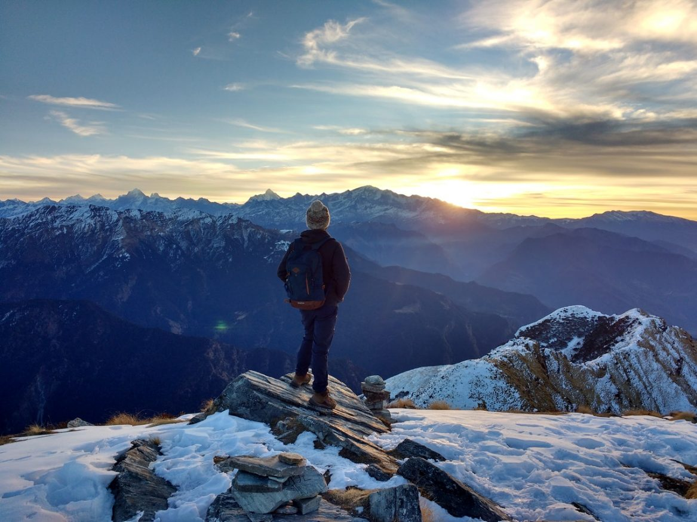

Chandrashila Peak
India travel advice
Vaccinations and health advice:
It’s recommended that foreign travellers have jabs to protect against hepatitis A, typhoid and diptheria. You should visit your doctor at least a month before your trip to double check the latest advice and organise your vaccinations.
Malaria is a serious problem in India and, depending on where you’re headed, you may need to take anti-malaria medication. Resources from sites such as Fit for Travel can help inform you, but you should always check with your doctor before you travel, and follow their advice closely. If you think you have symptoms of malaria – these can include a flu-like feeling, fever and headaches – seek medical attention immediately.
Once you’re on your travels, it’s worth carrying some bug bite cream with you – and some strong bug spray to stave off those pesky creepy crawlies in the first place. Plasters/band aids won’t go amiss either.
Be aware, too, that although Western-style loos are becoming more ubiquitous across India, many toilets will not have toilet paper – most backpackers will keep a ready supply in their bag…
What should I wear?
Beyond dressing in accordance with local customs, you should also dress for your own safety. Wear loose, cotton clothing where possible as this will keep you cool in the often searing Indian heat – long sleeves will help protect against this too. Also wear a wide-brimmed hat where appropriate. Needless to say, comfortable shoes are a must.
Don’t attempt a hike, particularly in India’s challenging northern terrain, without the proper kit. The weather here is changeable, so the best advice is to dress in layers. You’ll need hardy hiking boots and trousers that are cool and lightweight, but also waterproof just in case. Bring plenty of warm clothing if you’re overnighting in the mountains.
Advice for travelling India alone:
Safety on your travels is never guaranteed, wherever in the world you are – but if you’re travelling solo, this handful of tips should help you on your way.
- Preparation is key: Within reason, planning routes, modes of transports and activities in advance can help your trip run smooth and save you from getting lost. It also means you can let friends, family or the folks at your hostel know your whereabouts for the day.
- Get a local SIM: Getting a SIM card that works locally can help you keep in touch with people you meet on your adventures. You’ll also be able to seek help should you get lost or find yourself in a situation you’re uncomfortable with.
- Trust your gut: If something feels wrong, it probably is. This can extend to feeling uncomfortable when walking in a dark place alone at night or dealing with a pushy stranger offering you help you didn’t ask for. Keep your wits about you, trust your instincts and manage the situation as best you can.
- Make friends along the way: Staying in a hostel is great way to meet people – swap stories, share tips and perhaps even team up for a leg of your journey.
![]()